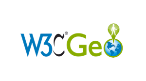
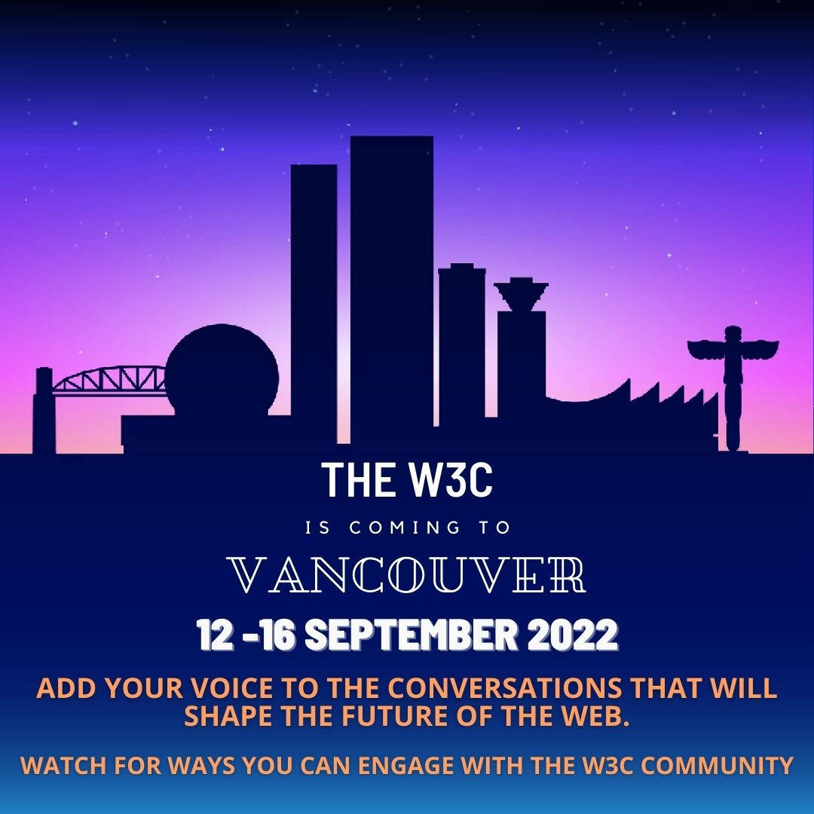
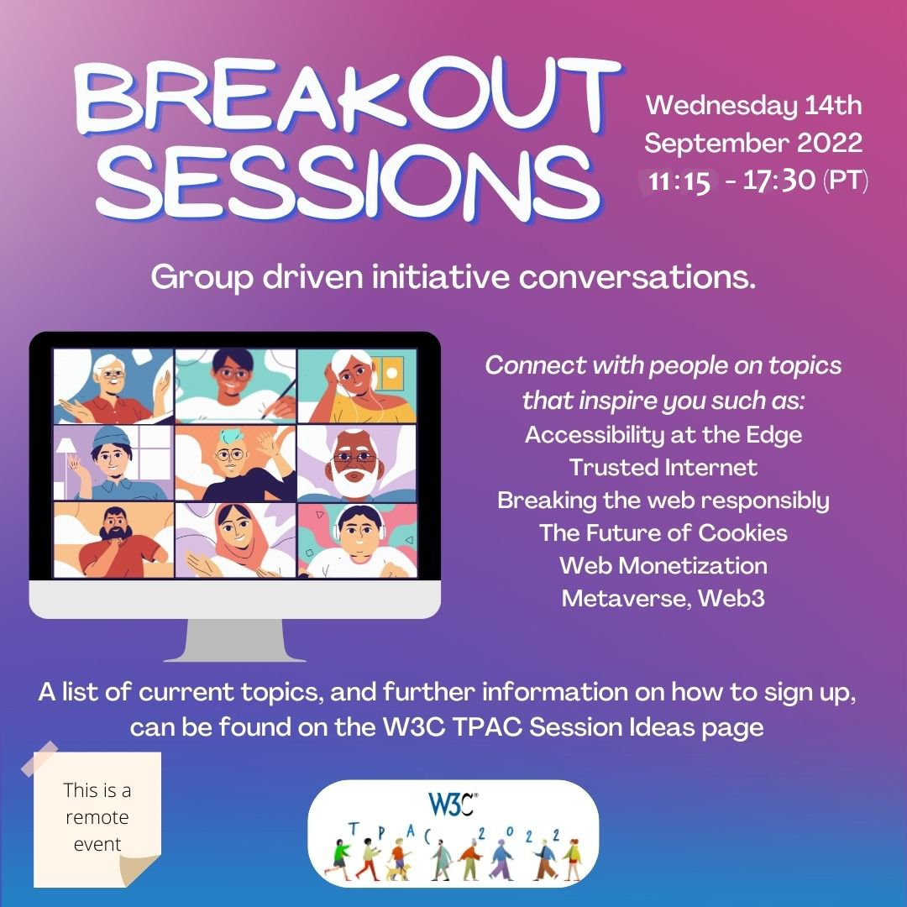
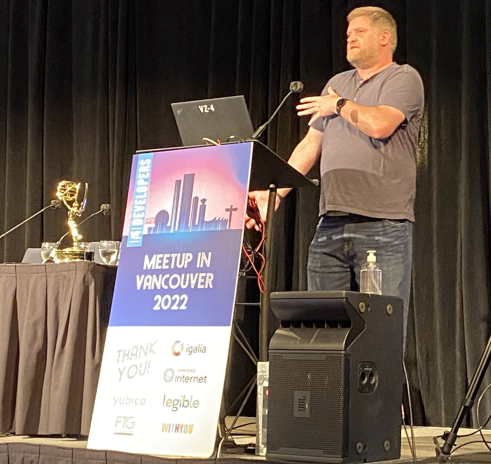
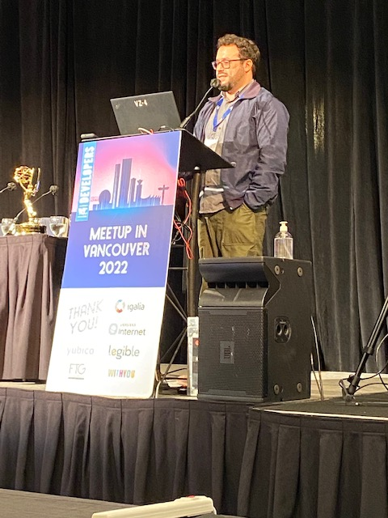
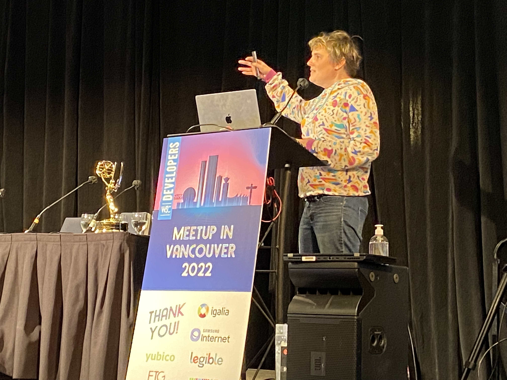
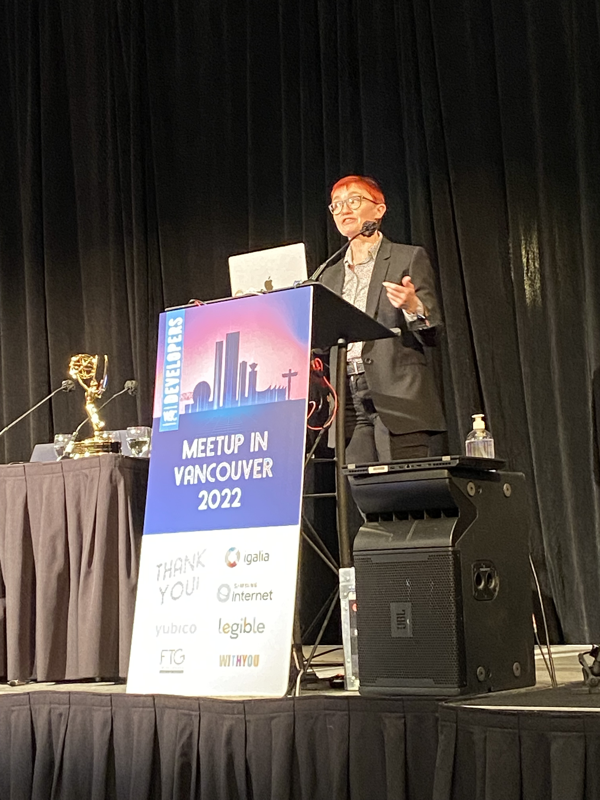

Congrats to editors @marcosc and @reillyeon for the republished @w3c #WebStandard "Geolocation API": https://www.w3.org/TR/geolocation/ https://twitter.com/w3c/status/1565222782723670018
The #Geolocation API is one of the oldest sensor #API in Web #browsers, enabling to obtain information on the device location either as one-shot or continuously.
https://twitter.com/w3cdevs/status/1565334056820039680Work on the Geolocation #API started in 2008 and led to a first @w3c standard in 2013. But the Web platform is always evolving, and specifications need to be updated to reflect changes.
https://twitter.com/w3cdevs/status/1565334062855622656This may not be as glamorous as creating new specs, but it's a critical job to keep the platform consistent, safe and interoperable.
https://twitter.com/w3cdevs/status/1565334064860577792#w3cTPAC: discover what is happening in @w3c's #Math #WorkingGroup (https://www.w3.org/Math/) with these 4 demos 🎬:
1⃣ #MathML-Core by @briankardell: this new specification carefully defines a subset of MathML 3 which is implemented in browsers and describes its platform integration with #HTML, #CSS, #JavaScript and #SVG.
https://www.w3.org/2022/09/TPAC/demos/mathontheweb.html
https://twitter.com/w3cdevs/status/15653507152281886733⃣ @ways2read demonstrates #math #accessibility and also shows some configuration options that can tailor the experience to a user's needs.
https://www.w3.org/2022/09/TPAC/demos/mathml-a11y-demo.html
https://twitter.com/w3cdevs/status/15653507235329515542⃣ In "That's now what I mean!", Neil Soiffer gives a brief introduction to a new feature in MathML 4 that improves #accessibility by allowing authors to communicate their intent to their assistive technology.
https://www.w3.org/2022/09/TPAC/demos/math-a11y.html
https://twitter.com/w3cdevs/status/15653507209073172484⃣ Paul Libbretch illustrates interoperability challenges when exchanging mathematical #formulae through the clipboard.
https://www.w3.org/2022/09/TPAC/demos/mathml-formulae.html
https://twitter.com/w3cdevs/status/1565350726527696896In a bit less than one hour will start another test of redirecting http://w3.org to https, this time excluding XML Schema resources that have proved the most challenging at this time https://status.w3.org/incidents/j1gjbnnd4rkk https://twitter.com/w3cdevs/status/1562065956280606720
https://twitter.com/w3cdevs/status/1565369984284516355🗓️ September@w3c: the W3C is coming to #Vancouver 🇨🇦 ! #w3cTPAC #w3cdevs2022 #digipub
13 Sept., 8:00-12:00 PT: organized by the #EPUB3 #WorkingGroup, the @w3c digital publishing salon is an online event, bringing together key stakeholders to discuss the future of digital #publications w/ the goal of creating a 5-year roadmap #w3cpublishing
https://www.w3.org/2022/09/digpubsalon
https://twitter.com/w3cdevs/status/156537228845906739213 Sept., 18:00-21:00 PT: the first ever @w3c developer #meetup in Vancouver! Come learn from and meet with the top notch engineers building the Web. Please register for this FREE in-person event #w3cdevs2022
https://www.w3.org/2022/09/meetup/
https://twitter.com/w3cdevs/status/156537229400813158714 Sept., 11:15-17:30 PT: want to hear about some of the new ideas cooking in @w3c and get a glimpse on how to get involved in pushing them forward? Register to the #w3cTPAC public breakouts! https://ti.to/w3c/tpac-2022-public-breakouts
https://twitter.com/w3cdevs/status/156537229795914547328 Sept.: @ibjacobs, W3C #WebPayments lead, takes part in the webinar organized by @emvco, @FIDOAlliance and @w3c to discuss the work to advance web payment #security with EMV® 3-D Secure and Secure Payment Confirmation (SPC) https://www.emvco.com/get-involved/industry-events/
https://twitter.com/w3cdevs/status/1565372301008408576Meet the @Yubico team at the event - they will demo an adaptive Multiple Factor Authentication (#MFA) approach to help users migrate towards #WebAuthn
https://www.w3.org/2022/09/meetup/demos.html#yubico
Thank you to @Yubico for supporting the @w3c #developer meetup in #Vancouver, 🇨🇦! #w3cdevs2022
https://w3.org/2022/09/meetup/
https://twitter.com/w3cdevs/status/1565384772976779264Register to this FREE meetup - 13 September 2022 from 6pm to 8:45pm PT, on site at the Sheraton Vancouver Wall Centre! https://ti.to/w3c/w3c-developer-meetup-vancouver-2022
https://twitter.com/w3cdevs/status/1565384775745028096#CSS container queries and units have a lot to offer! Join us at @w3c's free #developer #meetup next week in Vancouver 🇨🇦 where @TerribleMia will show how the feature works, how to start using it in production, etc. #w3cdevs2022
https://www.w3.org/2022/09/meetup/speaker-miriam.html
The #meetup starts at 6pm. Register and come hear all speakers!
https://www.w3.org/2022/09/meetup/speakers.html
https://twitter.com/w3cdevs/status/1566834452759777280... with thanks to our sponsors @Yubico, @Igalia, @samsunginternet, @FortuneTimesNYC, @Legible_Inc and @WithyouAgence
https://www.w3.org/2022/09/meetup/sponsors.html
https://twitter.com/w3cdevs/status/1566834458451378185Thank you to @samsunginternet for supporting the @w3c #developer meetup in #Vancouver, 🇨🇦!
https://w3.org/2022/09/meetup/ #w3cdevs2022
Great line-up of speakers - registration is open ;)
https://twitter.com/w3cdevs/status/1567065926335451136Discover what is happening in @w3c! For #w3cTPAC, Garret Rieger and the web fonts #WorkingGroup give an in-browser 🎬 demo of Incremental #Font transfer
https://www.w3.org/2022/09/TPAC/demos/webfonts.html (video w/ transcript)
Incremental font transfer is a new technology that allows browsers to partially load fonts. Find out more in the spec.: https://w3c.github.io/IFT/Overview.html
https://twitter.com/w3cdevs/status/1567070209705377801At next week's @w3c developer #meetup in Vancouver 🇨🇦, @Chronotope will make you understand important #privacy principles you can incorporate into your own development process: "Where Goes #Advertising, There Goes the #Web"! #w3cdevs2022
https://www.w3.org/2022/09/meetup/speaker-aram.html
The #meetup starts at 6pm on Tuesday 13 September in Vancouver 🇨🇦. Time to register and know more! https://www.w3.org/2022/09/meetup/registration.html
https://twitter.com/w3cdevs/status/1567212012681183232Discover what's happening in @w3c with this new demo🎬 ! For #w3cTPAC, @christiaanbrand, @timcappalli and @MegTechPR show how the #WebAuthn API serves as a critical enabler to #passkeys - cc @FIDOAlliance
https://www.w3.org/2022/09/TPAC/demos/passkeys.html (w/ transcript)
Want to watch more? Check the list of all demos and #WorkingGroup updates at https://www.w3.org/2022/09/TPAC/group-updates.html
https://twitter.com/w3cdevs/status/1567467411166691328#w3cdevs2022 Come hear @rachelandrew present "Interop 2022", a benchmark focusing on 15 key areas identified by #developers as being troublesome when they are missing or have #compatibility issues across #browsers
https://www.w3.org/2022/09/meetup/speaker-rachel.html
Register at next week's #meetup in Vancouver 🇨🇦 (13 Sept. 18:00-20:45pm PT) - https://ti.to/w3c/w3c-developer-meetup-vancouver-2022
See you there!
https://www.w3.org/2022/09/meetup/
https://twitter.com/w3cdevs/status/1567555717963386881Thank you to @Legible_Inc for supporting the @w3c #developer meetup in #Vancouver, 🇨🇦! #w3cdevs2022
https://www.w3.org/2022/09/meetup/demos.html#legible
Meet the @Legible_Inc team at the event - they will demo what happens to #books when built for a browser based system. Legible's Living Books are filled with creative, multimedia, dynamic content, while maintaining all the integrity and versatility of an #EPUB
https://twitter.com/w3cdevs/status/1567593906405089282Register to this 🆓 meetup - 13 September 2022 from 6pm to 8:45pm PT, on site at the Sheraton Vancouver Wall Centre! https://www.w3.org/2022/09/meetup/
https://twitter.com/w3cdevs/status/1567593912830758915A last 🎬 to discover what's happening now in @w3c! Qing An gives an overview of the WebView #CommunityGroup and lists some of the use cases that will be discussed during #w3cTPAC
https://www.w3.org/2022/09/TPAC/demos/webview.html (w/ slides and transcript)
Webviews are software components used in native apps to render content based on Web technologies. Read more at https://www.w3.org/community/webview/
https://twitter.com/w3cdevs/status/1567839841261424738Next Tue. in #Vancouver 🇨🇦 at the @w3c developer meetup, @gregwhitworth will present the #OpenUI initiative to allow web #developers to style and extend built-in web #UI controls - unlock your creativity! #w3cdevs2022
https://www.w3.org/2022/09/meetup/speaker-greg.html
Come hear and discuss with @gregwhitworth and all other speakers. The #meetup starts at 6pm PT. Register soon (https://ti.to/w3c/w3c-developer-meetup-vancouver-2022) - it's free!
https://www.w3.org/2022/09/meetup/speakers.html
https://twitter.com/w3cdevs/status/1567887348095909905... with thanks to our sponsors @Yubico, @Igalia, @samsunginternet, @FortuneTimesNYC, @Legible_Inc and @WithyouAgence
https://www.w3.org/2022/09/meetup/sponsors.html
https://twitter.com/w3cdevs/status/1567887354068697089Two newly published @w3c #WebStandards in #WebPayments land!
#timetoadopt https://twitter.com/w3c/status/1567888013543219201
1⃣ Congrats to editors @marcosc, @rsolomakhin and @ibjacobs for "Payment Request API". This spec. describes an #API that allows #browsers to streamline the payment flow between merchant and user https://www.w3.org/TR/payment-request/
https://twitter.com/w3cdevs/status/15679060691285524512⃣ And congrats to editors Adrian Bateman, @domenic, Zach Koch and Roy McElmurry for "Payment Method Identifiers". Other specs, such as the Payment Request API, make use of these identifiers to facilitate monetary transactions on the #WebPlatform
https://www.w3.org/TR/payment-method-id/
https://twitter.com/w3cdevs/status/1567906076766486528Note that "Payment Request API 1.1" is under development: https://twitter.com/w3c/status/1554456733082390528
https://twitter.com/w3cdevs/status/1567906074296205313... and read his recent article featuring the work around Secure Payment Confirmation (SPC): https://www.standict.eu/success-stories/making-online-payments-easier-and-more-secure-through-standards
https://twitter.com/w3cdevs/status/1567906081644417026Watch @ibjacobs give an overview of @w3c's Web #payments work: https://youtu.be/G2x12lmZ8aM
https://twitter.com/w3cdevs/status/1567906079627161600Thank you to @FortuneTimesNYC for supporting the @w3c #developer meetup in #Vancouver, 🇨🇦!
https://w3.org/2022/09/meetup/ #w3cdevs2022
Meet @RachelYager at the event - she will explain what GPS Application Development with AI Decision Science is about! https://www.w3.org/2022/09/meetup/demos.html#ftg
https://twitter.com/w3cdevs/status/1567909861018505217Register to our free event: https://ti.to/w3c/w3c-developer-meetup-vancouver-2022
https://twitter.com/w3cdevs/status/1567909866856914947A first version of the schedule for #w3cTPAC public breakouts has been released - mark your calendars! https://www.w3.org/2022/09/TPAC/breakouts.html https://twitter.com/w3cdevs/status/1565372297959145473
https://twitter.com/w3cdevs/status/1568273972420042753Hi #vancouverbc! @w3c is in town and organizes a #developer meetup downtown @WallCentre. Date is tomorrow (13 Sept. from 6pm)!!
Talks are about #CSS container queries, Interop 2022, Private #advertising technology, and #OpenUI.
Still time to register! 👇
https://www.w3.org/2022/09/meetup/speakers.html
We're looking forward to welcoming you. Sign up at https://ti.to/w3c/w3c-developer-meetup-vancouver-2022
https://twitter.com/w3cdevs/status/1569471940292919296The @w3c developer #meetup starts now and is live streamed! Listen to our great line-up of speakers! #w3cdevs2022
https://www.w3.org/2022/09/meetup/#stream
https://twitter.com/w3cdevs/status/1569861329753899008#w3cdevs2022 Incubation work @w3c with the #OpenUI initiative presented by @gregwhitworth. Developers, unlock your creativity!
https://twitter.com/w3cdevs/status/1569866559807705089#w3cdevs2022 @Chronotope demonstrates important #privacy principles #developers can incorporate into their own development process: "Where Goes #Advertising, There Goes the #Web!"
Follow the live stream on https://www.w3.org/2022/09/meetup/#stream
https://twitter.com/w3cdevs/status/1569868174895763456#w3cdevs2022 @TerribleMia shows that #CSS container queries and units have a lot to offer!
The #meetup is live streamed - listen to the talk now! https://www.w3.org/2022/09/meetup/#stream
https://twitter.com/w3cdevs/status/1569873685611433984#w3cdevs2022 @rachelandrew presents "Interop 2022", an initiative where all major browser vendors, and other stakeholders, have come together to solve the top browsers #compatibility issues identified by web #developers.
The live stream is still on https://www.w3.org/2022/09/meetup/#stream!
https://twitter.com/w3cdevs/status/1569880415368007680最近公開された @w3c 分散型識別子(DID)v1.0 #WebStandard は日本語に翻訳されています：https://www.asahi-net.or.jp/~ax2s-kmtn/internet/did/REC-did-core-20220719.html どうもありがとう @omnidirect ! #w3c_keio https://twitter.com/w3c/status/1572879872988696577
https://twitter.com/w3cdevs/status/1572984692890292224Today! ⏲️at 4pm BST / 5pm CEST / 8am PT / 10am CT / 11am ET.
Join this roundtable webinar to hear from @emvco, @FIDOAlliance and @w3c: how do EMV® 3-D Secure and Secure #Payment Confirmation (SPC) work together? #WebPayment @ibjacobs https://twitter.com/emvco/status/1574670678116257792
https://twitter.com/w3cdevs/status/1575048373698105345